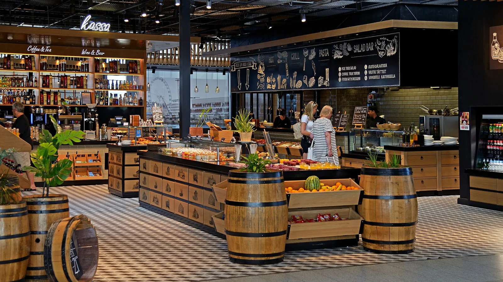
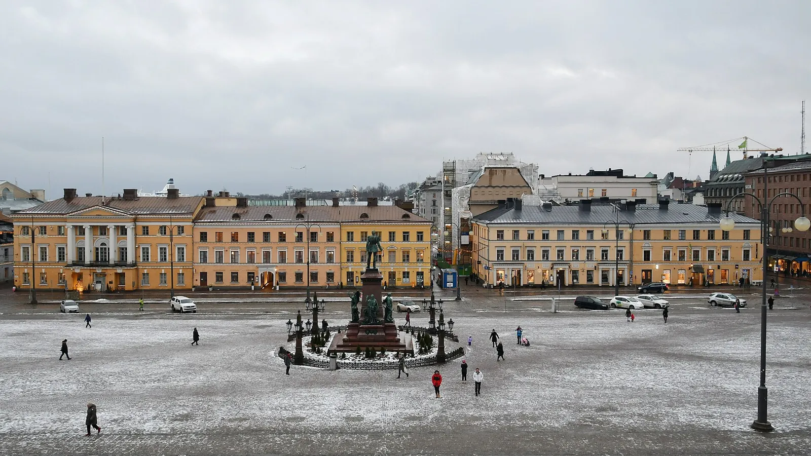
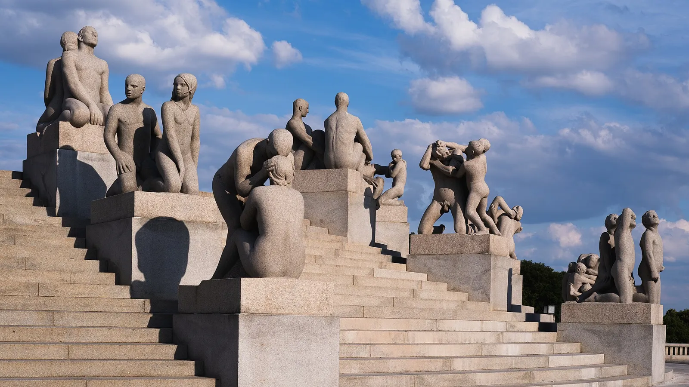
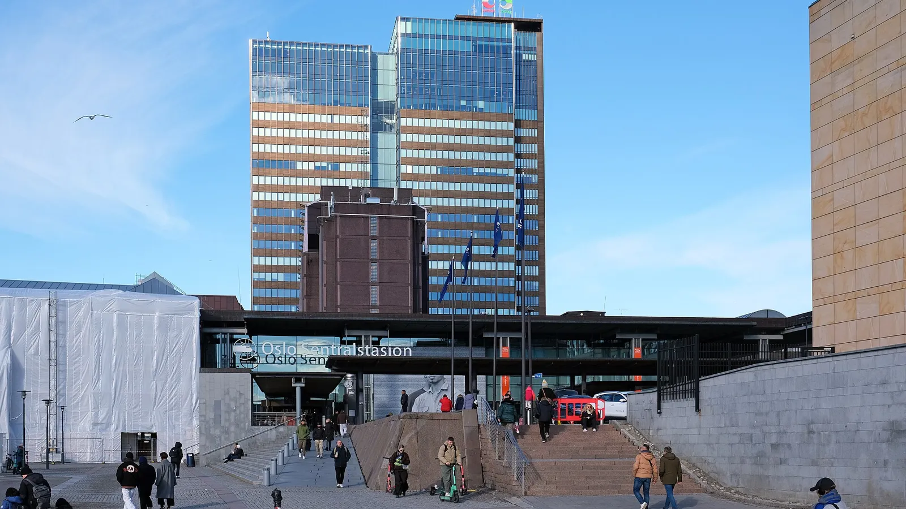
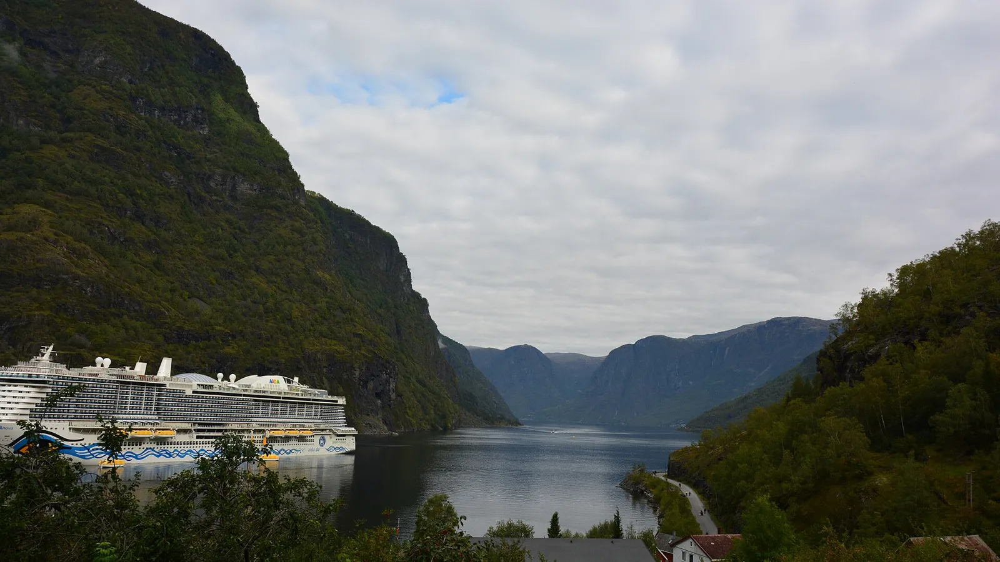
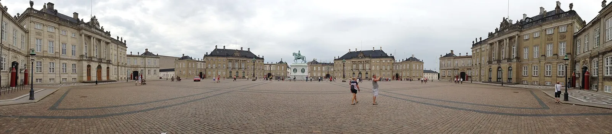

Scandinavia's highlights in a week: Helsinki, an overnight cruise ferry into the Stockholm archipelago, Oslo's sculpture park and fjord, the famous Norway in a Nutshell route by train and boat, Bergen's wooden wharf and Copenhagen. We built this from our older brochure and corrected the Norway part: it slept in Geilo after reaching Myrdal, but Geilo lies before Myrdal on the line. You now sleep in Flåm, which splits the fjord journey into two easy days. Oslo's Viking Ship Museum is closed for rebuilding until about 2027.
See it for yourself
Photos from the journey








Day by day, in short
Daily travel brief
Distances are by road for the whole day. The full plan with timings comes with your detailed itinerary.
-
1
-
2
Helsinki city tour and the overnight ship to Stockholm
Sibelius Monument Temppeliaukio Church
- Board the overnight ship: check-in closes about 1 hour before departure.
- Ask for a vegetarian dinner when we book; the buffet has salads and hot vegetarian dishes.
-
3
-
4
Oslo city tour
- Oslo city tour: the Viking Ship Museum is closed for rebuilding and reopens as the Museum of the Viking Age in about 2027.
- Oslo is expensive; the Oslo Pass covers transport and most museums.
-
5
Norway in a Nutshell: the Bergen line and the Flåm Railway
- Flåm Railway: the train stops at Kjosfossen for photos; stay on the platform.
- Sleeping in Flåm splits the Nutshell into two easy days.
-
6
-
7
Bryggen, then fly to Copenhagen
- Bergen is one of the rainiest cities in Europe; keep an umbrella handy.
-
8
Copenhagen city tour and fly home
- Transfer to Copenhagen Airport: be at the airport 3 hours before an international flight.
- Add a night in Copenhagen if your flight is in the morning.
Local know-how
Travel hacks from our desk
Hotel deposit
Use a credit card for the deposit or pre-authorisation at check-in, never a forex or debit card. Forex cards cannot hold funds, many hotels refuse them, and a credit-card hold is released faster.
Cards and cash
On card machines, always choose to pay in the local currency (euros in Finland, Swedish, Norwegian and Danish kronor elsewhere), never in INR. Scandinavia is almost cashless: cards and phone payments work everywhere, even for toilets and market stalls. You need little or no cash.
Pickpockets
Busy stations, trams and squares are pickpocket hotspots. Keep passports in the hotel safe, carry a copy, and wear your bag in front in crowds.
Plugs, water and meal times
Plugs are the two round-pin type C and F at 230 volts (Switzerland uses type J; a type C plug fits). Tap water is safe to drink. Lunch is about 12:00 to 14:00 and dinner from about 18:30.
When to go
Best time to visit for this journey
June to August.
May to September. Fjord boats and the Flåm Railway run all year, but summer has the most departures and the longest light.
The package
What's included
Included
- 7 nights with breakfast (one on the ship)
- Private airport transfer in Helsinki
- Overnight ship Helsinki to Stockholm with buffet dinner
- City tours in Helsinki, Stockholm, Oslo and Copenhagen
- Flights Stockholm to Oslo and Bergen to Copenhagen
- Norway in a Nutshell trains, fjord cruise and bus
- 24/7 support from Blue Diamond Voyage
Not included
- International flights
- Schengen visa
- Museum entries
- Lunches and dinners except on the ship
- Travel insurance
The detailed itinerary
Some journeys are planned. Ours are crafted.
The full 8-day plan is ready: hour-by-hour timings, drive times, temple dress codes, food for your diet and a route map for every day. Tell us your dates and your city, and we'll send it to you on WhatsApp, shaped around you.
- Hour-by-hour timings
- A route map for every day
- Hotel and room details
- Visa and entry steps
- Vegetarian and Jain dining
24/7 travel desk+91 97148 59797+91 98242 21400
Photo and map credits
- Helsinki Airport: Ввласенко, CC BY-SA 3.0, via Wikimedia Commons
- Senate Square: Tyg728, CC BY-SA 4.0, via Wikimedia Commons
- Stockholm archipelago: Arild Vågen, CC BY-SA 4.0, via Wikimedia Commons
- Vigeland Park: Christian David, CC BY-SA 4.0, via Wikimedia Commons
- Oslo S: kallerna, CC BY-SA 4.0, via Wikimedia Commons
- Aurlandsfjord: Фалкон, CC BY 4.0, via Wikimedia Commons
- Bryggen: JoachimKohler-HB, CC BY-SA 4.0, via Wikimedia Commons
- Amalienborg: Janeway666, CC BY-SA 3.0, via Wikimedia Commons
- Maps: © OpenStreetMap contributors; road routes by OSRM.